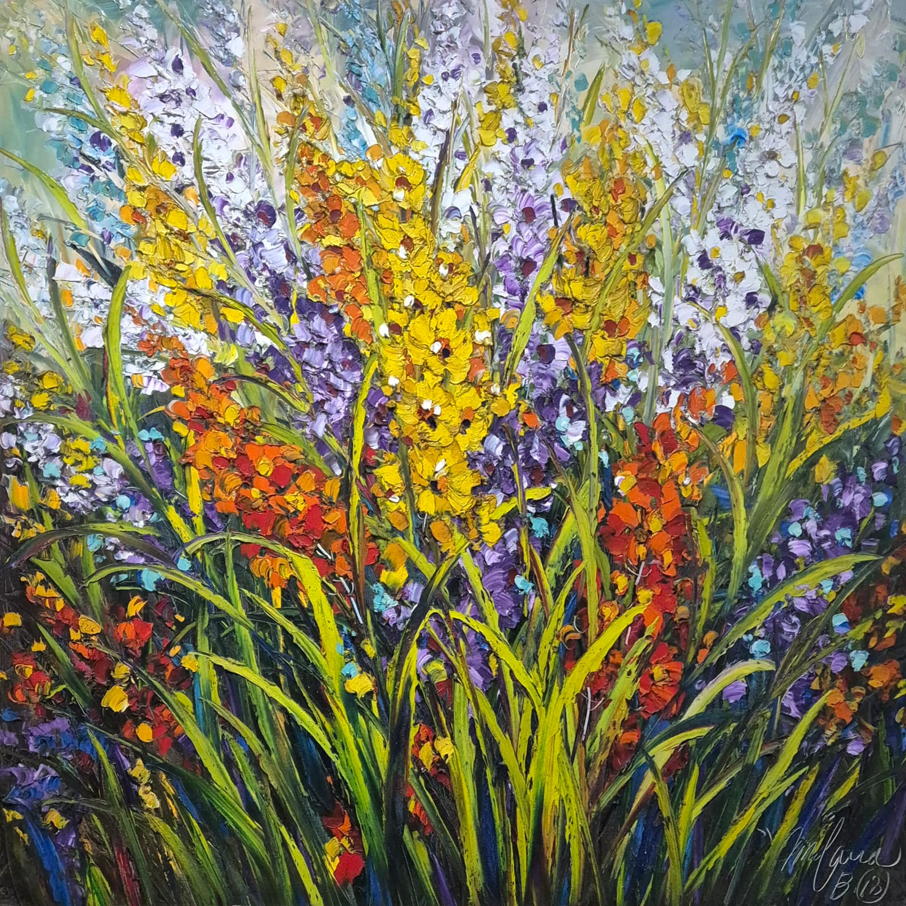

Flowers Blooming Together
2018About the Artwork
This is a painting of brightly colored flowers, the artist uses acrylic and thick brushstrokes to bring this masterpiece into life. It is currently the largest painting in our collection, spanning over a meter in its width and height.
About the Artist
I Ketut Ridana is a graduate of SMSRI (Sekolah Menengah Seni Rupa Indonesia - High School of Indonesian Fine Art) in Bali. Soon after leaving his art school, he studied from a few senior artists for a few years before becoming a full time artist and opening his art gallery. At Ridana's fine art gallery, you can find a variety of Balinese and modern artworks. His art gallery is frequently visited by domestic and international visitors who are stopping by at the traditional market nearby. Ridana is most known for this floral paintings, although he is also known for his skill in creating images of figures such as people, animals, and other life objects. The thick brushstrokes and bright colors make this large painting feel attractive and lively.